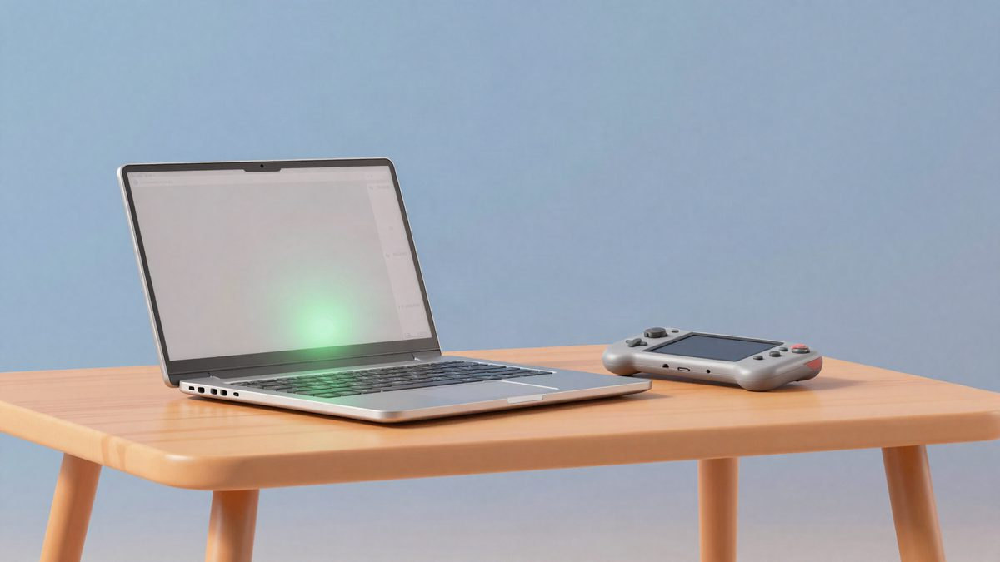

Zelda: Tears of the Kingdom radi na laptop chipu iz 2021. s 2 GB memorije, 30 fps

Korisnik Reddita pokazao je neslužbeni PC port igre The Legend of Zelda: Tears of the Kingdom na laptopu s Nvidia MX550 grafikom s 2 GB memorije i procesorom Intel Core i7-1255U. Igra navodno drži stabilnih 30 slika u sekundi. Nezavisnih provjera nema, a razlučivost i grafičke postavke nisu navedeni.
Korisnik Reddita pod imenom Accomplished_Law_237 pokazao je neslužbeni PC port igre The Legend of Zelda: Tears of the Kingdom na računalu s Nvidia MX550 grafikom i procesorom Intel Core i7-1255U. Igra navodno stabilno drži 30 slika u sekundi, iako grafika ima samo 2 GB memorije.
Tears of the Kingdom izašao je na originalnom Nintendo Switchu i jedna je od najbolje ocijenjenih igara na toj konzoli. Službenog PC porta nema, pa ga entuzijasti pokušavaju napraviti sami. Kako je ovaj port nastao i gdje se može preuzeti, nije rečeno.
Hardver na kojem radi
Nvidia MX550 je mobilna grafička kartica iz 2021. godine. Temelji se na Turing arhitekturi, a ima 1024 CUDA jezgre, 64-bitnu memorijsku sabirnicu i 2 GB memorije. Namijenjena je tankim laptopima, ne igranju zahtjevnih naslova.
Rezultat ipak nije pretjerano iznenađujući. Nintendo Switch koristi SoC Tegra X1 s grafikom generacije Maxwell, koja ima samo 256 CUDA jezgri. MX550 ima otprilike četiri puta više jezgri od grafike u konzoli, pa rezultat nije osobito iznenađujući.
Intel Core i7-1255U također je štedljiv mobilni procesor iz 12. generacije Intelovih chipova, namijenjen ultrabookima.
Za sada je to demonstracija jednog korisnika, a nezavisnih provjera rezultata nema. Hoće li Nintendo reagirati na takve neslužbene portove, nije poznato. Podaci o stabilnosti i kvaliteti slike temelje se na onome što je autor objavio na Redditu, a razlučivost i grafičke postavke nisu navedeni.
Izvor: iXBT